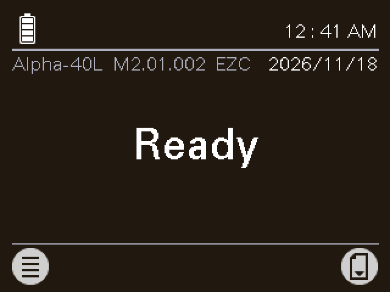
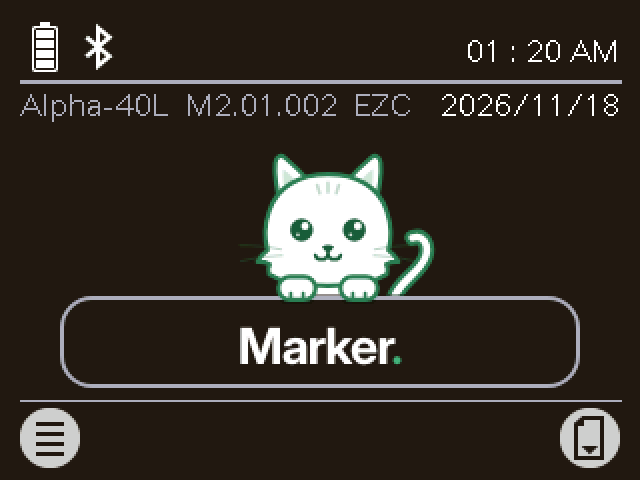

TSC Alpha-40L · M2.01.002 EZC
Bluetooth fix for TSC Alpha‑40L
After the update to M2.01.002 the printer pairs over Bluetooth but prints nothing: the firmware drives the Bluetooth module at 1 000 000 baud while the module works at 115 200. This page fixes TSC's official firmware file — on your computer, nothing is uploaded.
1Get the official firmware
Download it from TSC: tscprinters.com → Support → Downloads → Alpha-40L → Firmware. You need exactly this file:
ALPHA40L_EZC_M2.01.002.NEW · 3 604 516 bytes
SHA-256 152e5a55a991e8e3f0466eedc9c6a5ae850e2eac0b788e953fe66ef8d3f63329
2Open it here
3Choose what to include
4Build the file
Firmware part SHA-256 (must match the tested file):
5Send it to the printer
- Windows: TSC DiagTool → File Manager → file type “Firmware File” → Download. Or printer driver → Printer properties → Tools → Send File To Printer.
- macOS / Linux:
python3 tools/tsc_usb.py send FILEfrom this repository. - The printer checks the file, writes it and restarts by itself (about 20 seconds). Do not turn it off.
- Check: send
OUT PEEK32(539941872)— the fixed firmware answers3818916103.

